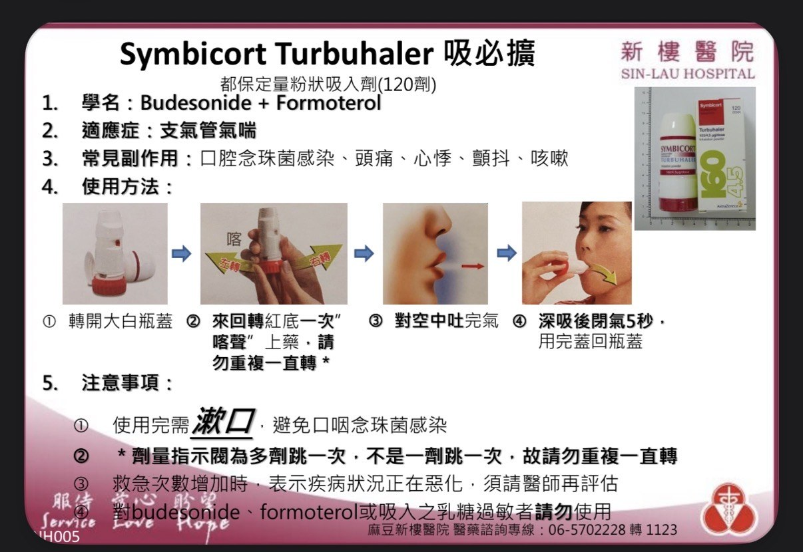
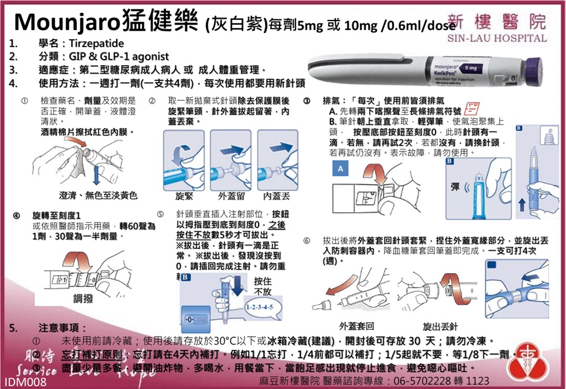
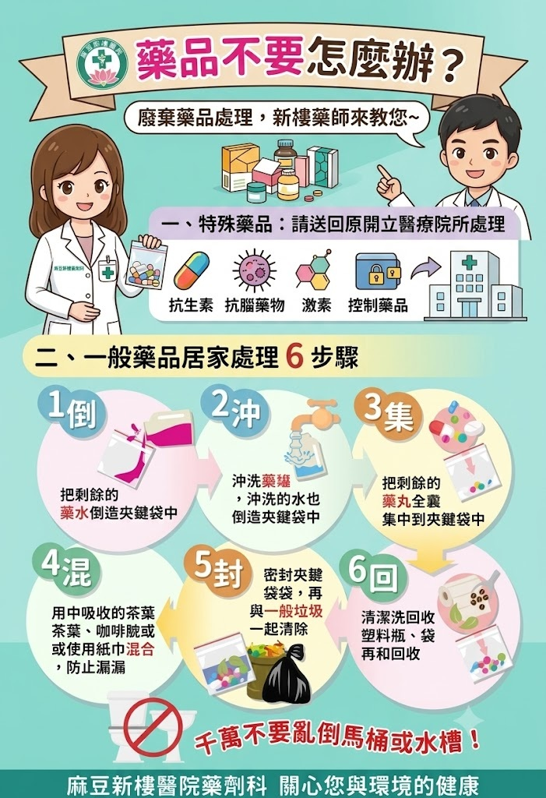

ED-01
吸入劑正確使用步驟
示範定量吸入劑（MDI）的正確操作順序：搖勻、吐氣、按壓同時緩慢吸氣、閉氣十秒。
給病人與家屬看的衛教圖片與影片，也可以在諮詢櫃檯播放給同仁參考。

示範定量吸入劑（MDI）的正確操作順序：搖勻、吐氣、按壓同時緩慢吸氣、閉氣十秒。

說明注射部位輪替、針頭處理方式，以及未開封／已開封胰島素的保存溫度與有效期限。

常溫、避光、冷藏三大類藥品保存重點整理，以及「藥品有效期限」與「開封後效期」的差異。